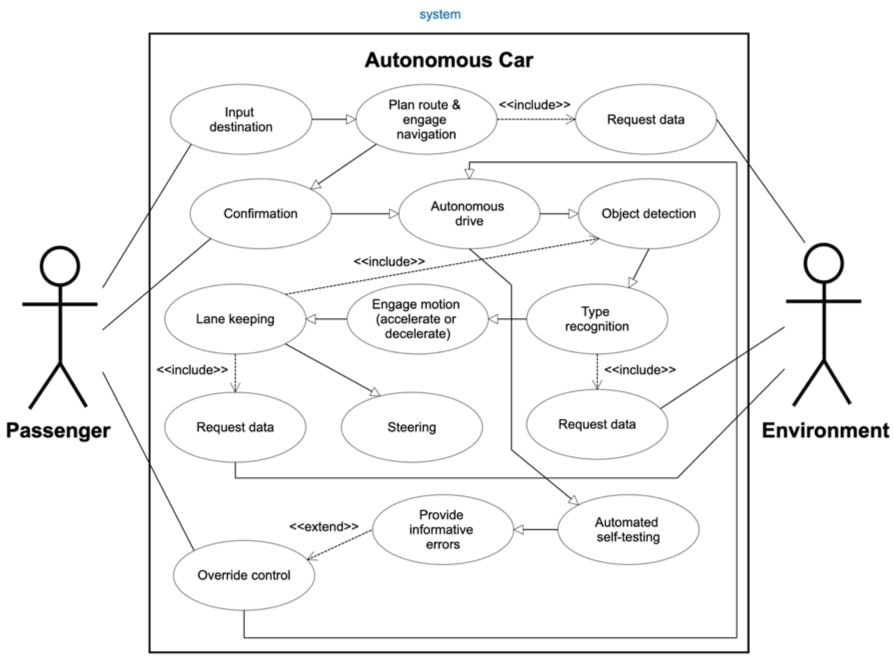
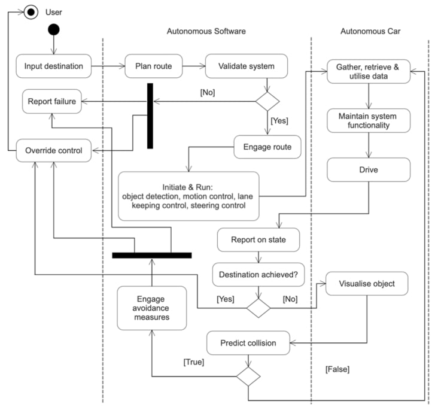
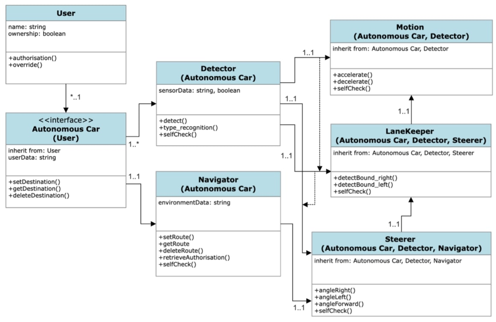
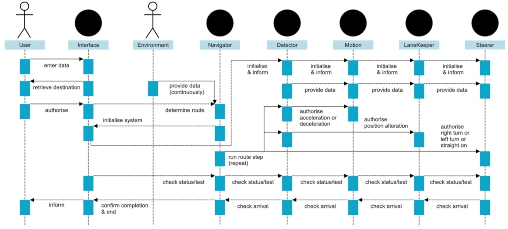
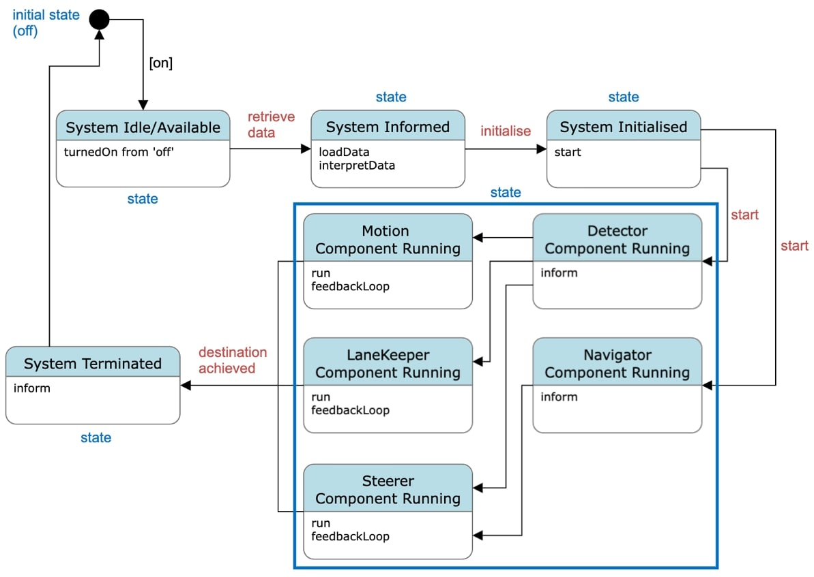

Assignment 1 & Assignment 2
Assignment 1 - System Design
Background Research Terms & Justifications of Use| Research Term | Reason For Use |
|---|---|
| autonomous | To understand what classifies as ‘autonomous’ and therefore, it’s requirements. |
| driverless | To understand the interaction between user and interface in this context. |
| interface | To understand the point of interaction between user and software. |
| navigation | To understand the requirements of the system component that must behave as a primary decision-maker. |
| detection | To understand the interaction between the software and the environment. |
| obstacle | To understand how the software will apply computer visualisation. |
| avoidance/mitigation | To understand how the system will react to the environment it interacts with. |
UML Models of System Design & Operation
Use Case Diagram:

Activity Diagram:

Class Diagram:

Sequence Diagram:

State Machine Diagram:

Rationale
The system design defined above utilising 5 UML (unified modelling language) diagrams outlines in full the software system to be developed for an
autonomous car. It will be built utilising object-oriented programming (OOP) in Python 3 and the VSC (visual studio code) environment. Compiled, the
system design defines 2 actors on the system; the user and the environment. Furthermore, the system components it defines are an interface, a detector
and a navigator unit and then a motion, a lane keeping and a steering controller. In general, the chronology of this description defines the ‘flow’
or hierarchy of the system and thus, it’s intrarelationships and inheritances. Of course, self-testing operations will be incorporated throughout the
software to ensure safe running and as a requirement of developing quality code. Feedback loops will be present all throughout.
This is the design because although the general function of an autonomous car is to arrive to a destination with user input being exclusively that of
an initial instruction, the system must be compartmentalised and it must be self-informing and the nature of this action must be continual. The system
must be self-informed by its own components and their intrarelationships and their interrelationship with the environment.
Data structures will retain the data that the system can retrieve. The nature of the system design means it has already provisioned the implementation of
data structures. These will be lists, stacks, queues and dictionaries. Of course, discretional to obstacles and realisations encountered during the
development process, lists will potentially store data relating to user input and interaction, queues will potentially store data as it relates to the
software’s understanding of its instantaneous environment, stacks will potentially store data relating to logging of self-testing results and dictionaries
will potentially store paired data values of any given navigational step and its associated driving action.
The front-end of the software will allow the user inputs. These will be minimal of course owing to the requirement of autonomy. Although, the user will be
required to enter a destination, confirm it and override the system to take control if needed. Prompts will sufficiently inform the user of their options,
the software’s actions and provide informational errors and warnings during operation. Therefore, the user will have the responsibility of instructing the
primary attribute the system will seek to achieve (the destination).
The back-end of the software system will generate and collect attributes that represent the wider environment. These will inform the system continually and
thus, the path to achieve the primary attribute inputted by the user. In conjunction with the primary attribute, the attributes collected by the system will
instruct drive and ultimately, if user override is needed as informed by errors. The attributes collected by the system will include, data relating to obstacles,
relationship with obstacles, position and relationship with position. These points of data retrieval by the system are defined in the UML models constructed.
Ultimately, this system design endeavours to implement robotic functionality that will achieve an instruction inputted by the user. Therefore, the system will
be built whilst prioritising, the concepts of computer visualisation, at least at a low level because OOP does not allow an actual implementation of this.
References
Betz, J., Wischnewski, A., Heilmeier, A., Nobis, F., Stahl, T., Hermansdorfer, L. & Lienkamp, M. (2019) ‘A software architecture for an autonomous race car’. IEEE
Vehicular Technology Conference, pp. 1-6. DOI: https://doi.org/10.1109/VTCSpring.2019.8746367
Fayjie, A., Hossain, S., Oualid, D. & Lee, D. (2018) ‘Driverless car: Autonomous driving using deep reinforcement learning in urban environment’. 15th
International Conference on Ubiquitous Robots, pp. 896-901. DOI: https://doi.org/10.1109/URAI.2018.8441797
Fouad, A.M., Sharkawy, R.M. & Onsy, A. (2019) ‘Fixed obstacle detection for autonomous vehicle’. International Conference on Power Electronics and Renewable Energy,
pp. 217-221. DOI: https://doi.org/10.1109/CPERE45374.2019.8980124
Gaikwad, P., Pillai, A., Bangera, A. & Aamer, N., (2022) ‘Traffic sign recognition’. International Journal of Advance and Innovative Research, 9(2), pp. 36-43.
Reddy, P., (2019) ‘Driverless car: software modelling and design using Python and Tensorflow’.
Singh, N., Srivastava, M., Mohan, S., Ali, A., Singh, V. & Singh, P. (2023) ‘Self-driving car: Lane detection and collision prevention system’. International Conference
on Advanced Communication and Intelligent Systems, pp. 549-562. DOI: https://doi.org/10.1007/978-3-031-25088-0_49.
Zhou, Z. & Sun, L. (2019) ‘Metamorphic testing of driverless cars’. Communications of the ACM, 62(3), pp.61-67. DOI: https://doi.org/10.1145/3241979.